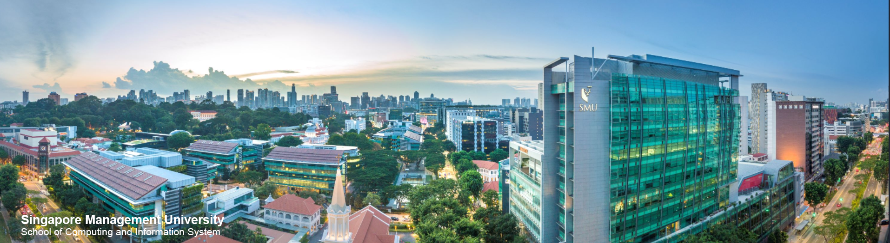
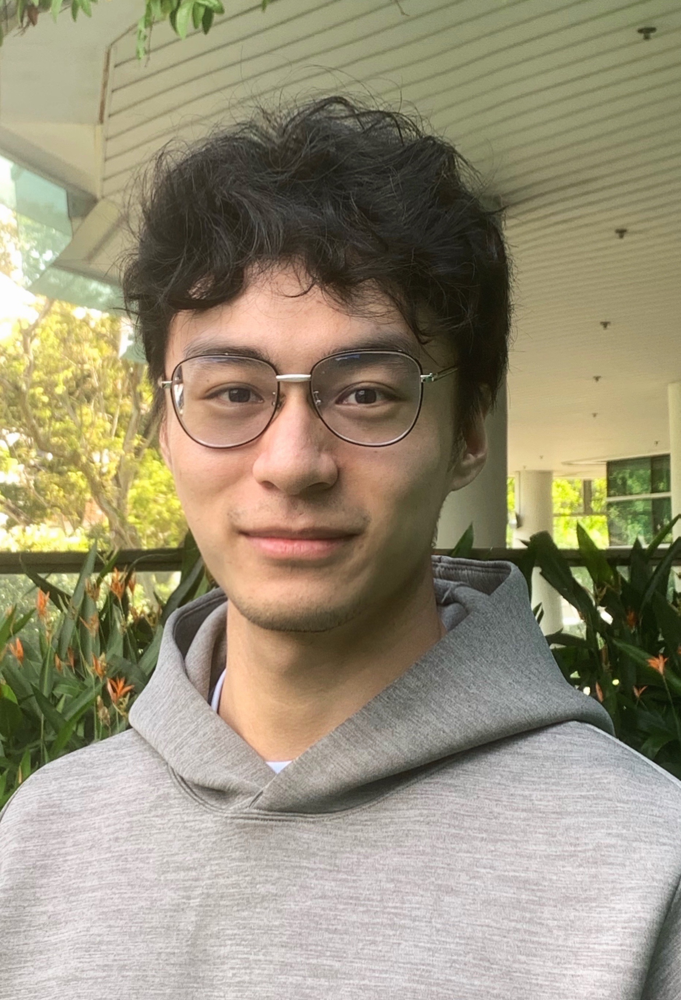

Shaolun RUAN's Homepage

Short Biography
Shaolun RUAN (阮劭伦) is currently an Ph.D. student of Computer Science at Singapore Management University, under the supervision of Assistant Professor Yong WANG. Before that, he received his bachelor degree from University of Electronic Science and Technology of China majoring in Information Security at School of Computer Science and Engineering in 2019. From 2020 to 2021, he worked as a Research Assistant at Kent State University, U.S. His major research interests include Visualization, Human-Computer Interaction and Computer Graphics.

News
Our tutorial was accepted by IEEE QCE'22! See you in Broomfield, Colorado, U.S.!
- May 2022
Our paper BatchLens was accepted by IEEE DATE'22 as the 1st author!
- November 2021
Attended and gave presentations on Conference of IEEE VIS'21.
- October 2021
Admitted as a Ph.D. student by SMU under the supervision of Yong WANG!
- September 2021
My paper Intercept Graph was accepted by IEEE VIS'21 as the 1st author!
- July 2021
Updated the IELTS overall bands to 7.0.
- November 2020
Graduated from University of Science and Tech. of China and get a Bachelor's degree.
- July 2019
Completed Engligh Language Academy at the University of Auckland, New Zealand.
- August 2017
Became a Visiting Student at the Univeristy of Melbourne, Australia.
- June 2017
Experiences
Ph.D. Student School of Computing and Information Systems, SMU, Singapore.
from Jan. 2022
Research Assistant Department of Art and Science, Kent State University, U.S.
July 2019 - Sept. 2021
Bachelar's Degree Candidate University of Electronic Science and Technology of China, Chengdu, China.
Sept. 2015 - July 2019
Publications
‐ Intercept Graph: An Interactive Radial Visualization for Comparison of State
Changes
Shaolun Ruan, Yong Wang, Qiang Guan
Proceedings of IEEE VIS (VIS 2021).
Download:
[PDF]
[BibTeX]
‐ BatchLens: A Visualization Approach for Analyzing Batch Jobs in Cloud Systems
Shaolun Ruan, Yong Wang, Hailong Jiang, Weijia Xu and Qiang Guan
Proceedings of Design, Automation and Test in Europe Conference (DATE 2022).
Download:
[PDF]
[BibTeX]
‐ Tutorial on QuantumFlow+VACSEN: A Visualization System for Quantum Neural Networks on Noisy Quantum Devices
Shaolun Ruan, Zhepeng Wang, Yong Wang, Weiwen Jiang and Qiang Guan
IEEE International Conference on Quantum Computing and Engineering (QCE 2022). To Appear.
Download:
[tutorial]
Posters
‐ Visilence: An Interactive Visualization Tool for Error Resilience Analysis
Shaolun Ruan, Yong Wang, Qiang Guan
In Proceedings of IEEE VIS 202.
Download:
[paper]
‐ JobPlot: Visual Analysis of Load-Balance in Large-Scale Distributed System
Shaolun Ruan, Jiansu Pu, Qiang Guan
In Proceedings of PacificVIS 2020.
Download:
[paper]
‐ egoDetect: Visual Detection and Exploration of Anomaly in Social Communication
Network
Jingwen Zhang, Jiansu Pu, Hui Shao, Yuwei Zhang, Tingting Zhang, Shaolun Ruan, Yunbo Yao, Yadong Wu
In Proceedings of PacificVIS 2020.
Download:
[paper]
‐ eduDiag: Machine Learning Visual Diagnosis Based on Student Behavior and Performance
Prediction
Tingting Zhang, Jingwen Zhang, Jiansu Pu, Hui Shao, Yuwei Zhang, Shaolun Ruan, Yunbo Yao, Yadong Wu
In Proceedings of PacificVIS 2020.
Download:
[paper]